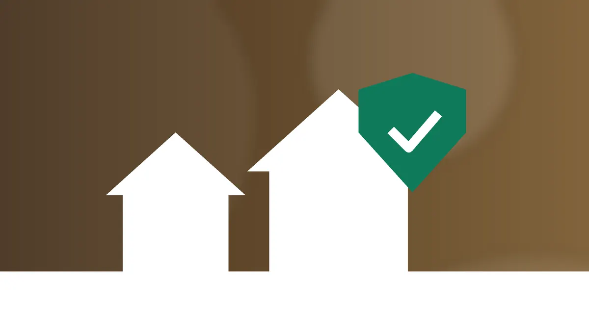

Cupins se alimentam de celulose — presente em madeira, papel, papelão e até em alguns tecidos — e vivem em colônias organizadas que podem passar anos sem ser notadas. No Brasil, os dois grupos que mais causam problemas em imóveis são o cupim de madeira seca e o cupim subterrâneo, também chamado de cupim de solo. Reconhecer qual deles está presente muda totalmente a forma de tratamento.
Cupim de madeira seca × cupim de solo
O cupim de madeira seca vive dentro da própria peça que está consumindo: uma porta, um rodapé, um móvel, uma viga. As colônias são menores e não precisam de contato com o solo. Já o cupim subterrâneo forma colônias numerosas no solo e chega até a madeira por meio de túneis de terra, que constrói para se proteger da luz e do ar seco. Ele pode atravessar fissuras no concreto, conduítes elétricos e juntas de pisos, alcançando andares altos de prédios.
Os 7 sinais mais comuns de cupins
1. Montinhos de "pó" ou grãos perto da madeira
É o sinal clássico do cupim de madeira seca. Os resíduos parecem areia fina ou pó de café e se acumulam no chão, embaixo de móveis, portas e batentes. Olhando de perto, são pequenos grânulos com formato regular — são as fezes dos cupins, expelidas por furinhos na madeira.
2. Furos minúsculos na superfície
Acima dos montinhos, costuma haver orifícios de um ou dois milímetros. Às vezes eles ficam tampados e são difíceis de ver; passar a mão pela madeira ajuda a perceber irregularidades.
3. Túneis de terra em paredes e estruturas
Caminhos de terra marrom, finos como um lápis, subindo por paredes, rodapés, pilares, batentes ou por dentro de armários são típicos do cupim de solo. Se você quebrar um pedaço e encontrar insetos claros, a colônia está ativa.
4. Revoadas de aleluias
Em dias quentes e úmidos, normalmente no início da temporada de chuvas, os cupins alados (as "aleluias" ou "siriris") saem para formar novas colônias. Se a revoada acontece dentro de casa ou se você encontra muitas asas soltas perto de janelas e lâmpadas, há colônias maduras por perto.
5. Madeira oca ou que cede ao toque
Bata levemente com o cabo de uma chave de fenda em rodapés, batentes e degraus. Um som oco ou uma madeira que afunda com pouca pressão indicam que o interior foi consumido.
6. Portas e janelas emperrando
A umidade produzida pela atividade dos cupins e a deformação da madeira podem fazer portas e janelas emperrarem sem motivo aparente.
7. Piso de madeira estufado e pintura descascando
Tacos soltos, piso de madeira ondulado e bolhas na pintura de paredes e forros podem ser causados por galerias de cupins logo abaixo da superfície.
O que fazer quando encontrar sinais de cupins
- Não varra nem descarte os resíduos imediatamente. Tire uma foto: ela ajuda o técnico a identificar o tipo de cupim.
- Não quebre os túneis de terra nem aplique inseticida doméstico. Isso pode espalhar a colônia sem resolver o problema.
- Afaste caixas de papelão, livros e madeira que estejam encostados na área afetada.
- Verifique outros cômodos, especialmente armários embutidos, forros e telhado.
- Peça uma vistoria profissional para confirmar a espécie e a extensão da infestação.
Como prevenir cupins
A prevenção passa por controlar a umidade (vazamentos e infiltrações atraem cupins), evitar o contato de madeira com o solo, não acumular entulho, restos de obra e madeira no quintal, inspecionar móveis usados antes de levá-los para casa e fazer vistorias periódicas, principalmente em imóveis com telhado de madeira ou móveis planejados. Antes de reformas, vale tratar preventivamente as áreas que receberão madeira nova.
Na região de Cajamar, com muitas áreas verdes e construções novas, é comum encontrar cupins de solo vindos de terrenos vizinhos. Se você notou qualquer um dos sinais acima, conheça nosso serviço de descupinização em Cajamar e região: fazemos a vistoria, identificamos o tipo de cupim e indicamos o tratamento adequado.
Quer uma avaliação profissional?
A Elbatec atende Cajamar e região com vistoria e orçamento sem compromisso.